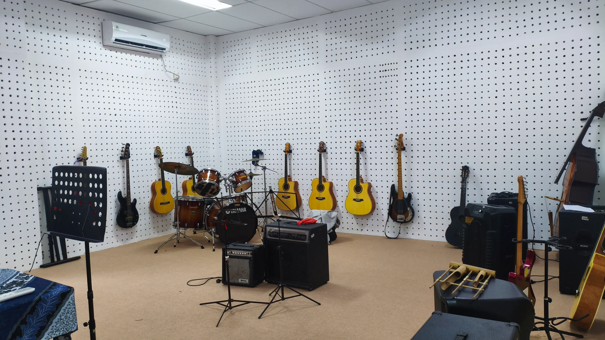
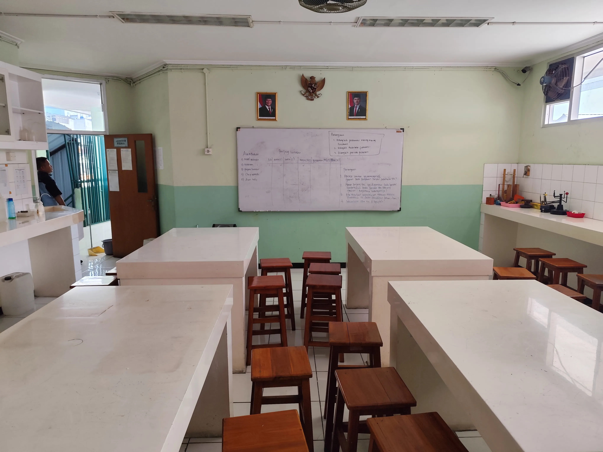
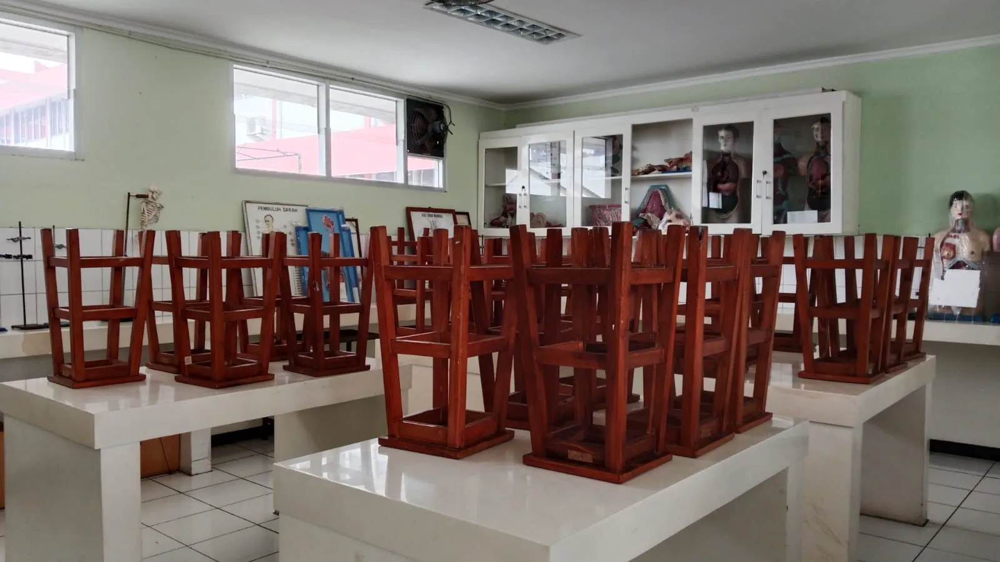
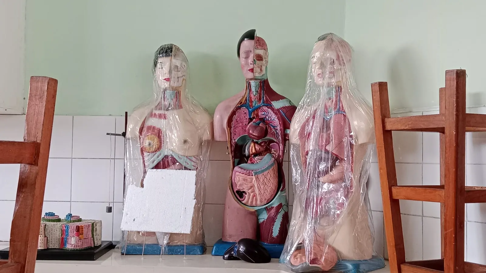
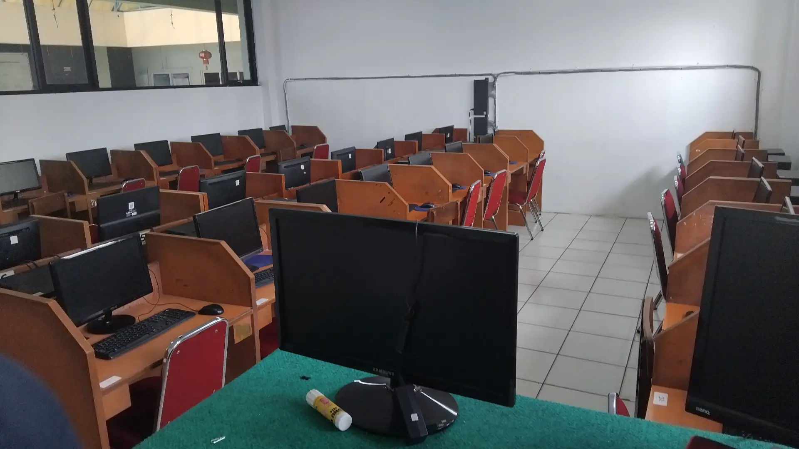
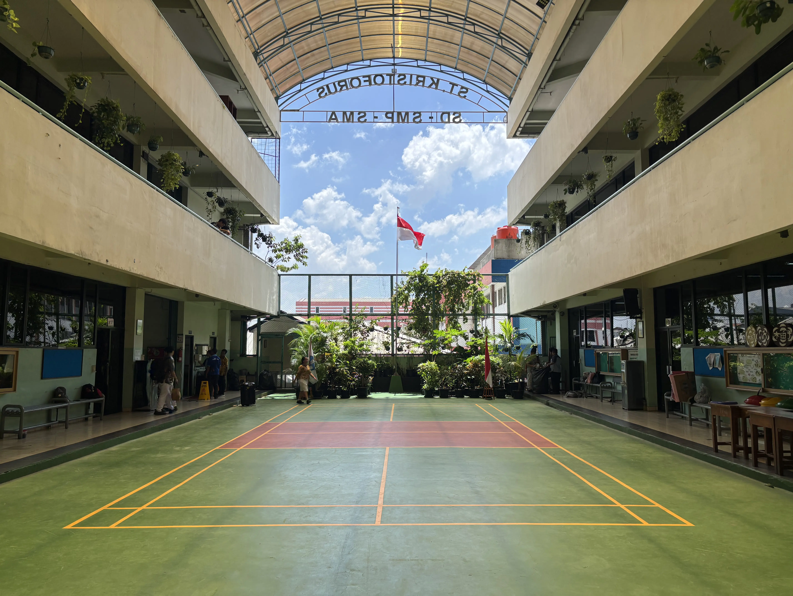
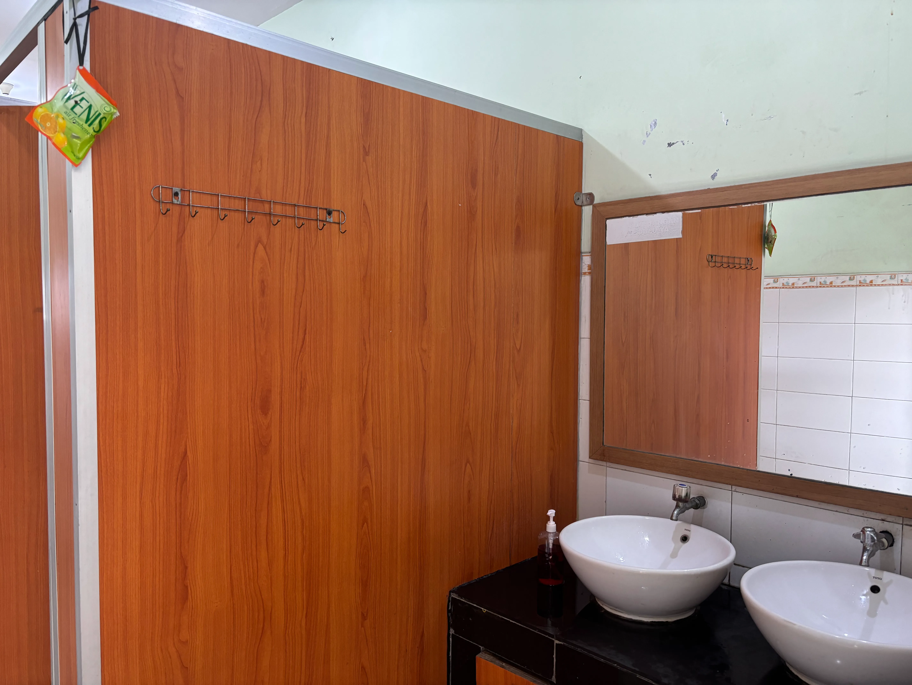
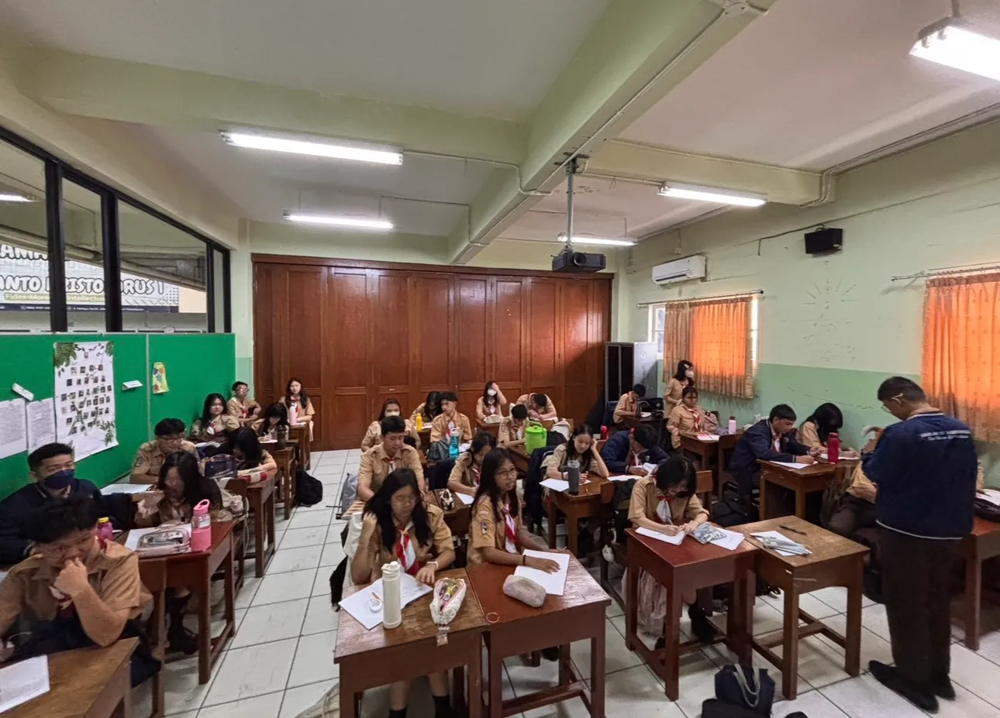
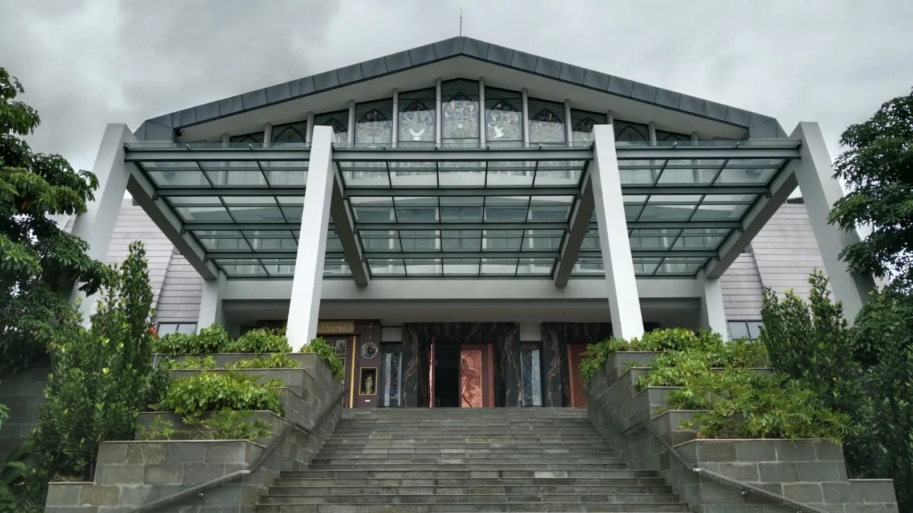
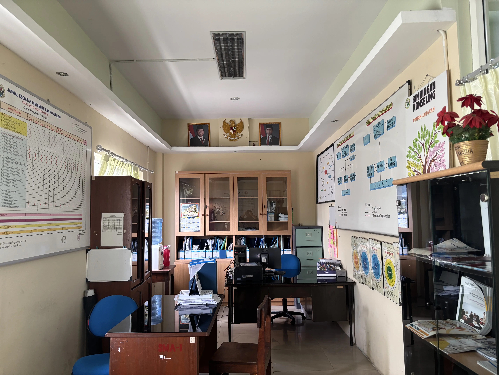

Sarana & Prasarana
Fasilitas Sekolah

Seni Musik
Ruang Band
Ruang khusus untuk mengasah keterampilan dan kreativitas dalam bermusik. Dilengkapi dengan alat musik modern dan fasilitas pendukung, sebagai sarana untuk mengekspresikan bakat musik.
Seni Vokal
Ruang Paduan Suara
Ruang khusus untuk melatih vokal dan harmonisasi dalam paduan suara. Dilengkapi dengan fasilitas akustik sebagai wadah untuk mengembangkan kemampuan bernyanyi bersama.

Ilmu Pengetahuan Alam
Laboratorium Fisika
Peralatan eksperimen fisika yang lengkap untuk mendukung pembelajaran konsep-konsep mekanika, listrik, optik, dan gelombang secara praktis dan interaktif.

Ilmu Pengetahuan Alam
Laboratorium Kimia
Laboratorium kimia berstandar keamanan tinggi, lengkap dengan alat titrasi, spektroskopi, dan reagen kimia yang dibutuhkan untuk praktikum kurikulum SMA.

Ilmu Pengetahuan Alam
Laboratorium Biologi
Dilengkapi dengan mikroskop, preparat, model anatomi, dan koleksi spesimen yang memungkinkan siswa mempelajari ilmu kehidupan secara langsung dan mendalam.

Teknologi
Laboratorium Komputer
Laboratorium komputer yang dilengkapi dengan perangkat terbaru dan koneksi internet cepat. Sebagai ruang untuk belajar, mengembangkan keterampilan digital, dan mendukung kegiatan praktikum serta penelitian di bidang teknologi informasi.
Olahraga
Lapangan Basket
Area lapangan di lantai dasar untuk kegiatan olahraga outdoor. Cocok untuk upacara bendera, senam pagi, dan berbagai kegiatan fisik di ruang terbuka.

Olahraga
Lapangan Badminton
Lapangan khusus untuk bermain badminton yang dirancang dengan standar ukuran resmi sebagai sarana untuk berlatih, meningkatkan keterampilan, dan menjunjung semangat olahraga di lingkungan sekolah.
Konsumsi
Kantin
Kantin sekolah yang menyediakan makanan dan minuman sehat dengan harga terjangkau. Dikelola dengan standar kebersihan yang ketat untuk menjaga kesehatan seluruh warga sekolah.

Sanitasi
Toilet
Fasilitas sanitasi yang selalu dijaga kebersihan dan ketersediaan airnya. Terpisah antara putra dan putri, dirancang untuk kenyamanan dan privasi siswa.

Pembelajaran
Kelas
Ruang pembelajaran yang dilengkapi dengan meja, kursi, papan tulis, dan perangkat multimedia. Sebagai tempat untuk mengembangkan pengetahuan, keterampilan, dan interaksi antara guru dan siswa dalam proses belajar-mengajar.

Rohani
Gereja
Tempat ibadah yang dirancang untuk mendalami kehidupan spiritual. Dilengkapi dengan fasilitas yang mendukung kegiatan ibadah, doa, dan pembelajaran agama, sebagai ruang untuk memperkuat iman dan kebersamaan umat.

Layanan Siswa
Ruang Bimbingan & Konseling
Ruang yang dirancang untuk memberikan layanan bimbingan dan konseling kepada siswa.Sebagai tempat untuk mendiskusikan permasalahan pribadi, akademik, dan sosial secara nyaman dan terbuka.